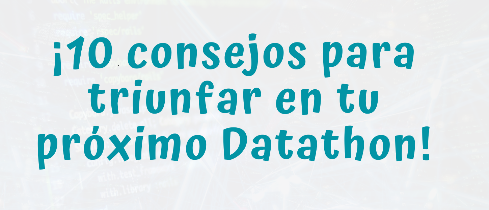
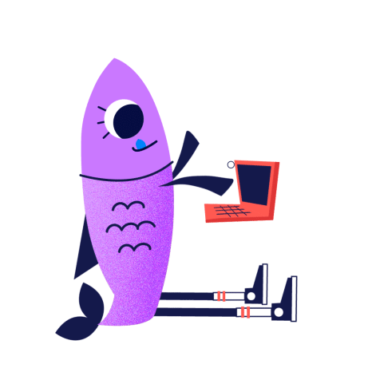

¡10 consejos para triunfar en tu próximo Kaggle, Datathon o competición de datos!
En este post presentamos nuestra experiencia y mejores consejos para que consigas tus objetivos en tu próximo Kaggle, Datathon o competición de datos.
- 1. Establece tu objetivo y revisa los recursos (habilidades, tiempo, acceso a máquinas…) con los que cuentas.
- 2. Elección del tema o CdUso.
- 3. Construye tu equipo de manera consciente. Usa herramientas para compartir código/archivos.
- 4. Investigación previa y profunda sobre el caso de uso en concreto.
- 5. Análisis exploratorio de los datos. Recuerda que (normalmente) no son los únicos que puedes usar.
- 6. Establecer la estructura del proyecto y del código.
- 7. Lanzar los primeros modelos.
- 8. Validación cruzada, OOS y backtesting.
- 9. Interpretabilidad de modelos. Evaluación de resultados desde el punto de vista práctico y/o negocio.
- 10. Escribir una memoria con puntos fuertes y puntos a mejorar detectados, que te sirvan de partida en el próximo reto.

¿Pensando en inscribirte en un Datathon o competición de datos? ¡En este post os traemos 10 consejos sobre los puntos clave para conseguir grandes resultados!
1. Establece tu objetivo y revisa los recursos (habilidades, tiempo, acceso a máquinas…) con los que cuentas.
Comenzamos por un punto esencial. Dependiendo de tu perfil y de la competición, deberás plantearte a priori qué pretendes conseguir participando en el reto. Puede ser aprender y mejorar en un determinado campo o tecnología, conseguir el premio, quedar entre los 3 primeros para incluirlo en tu CV o simplemente por diversión. Cualquiera que sea está bien.
Lo que recomendamos es evaluarlo de manera sincera, ya que será bastante el tiempo invertido y tener tu objetivo presente te ayudará en los momentos de menor motivación.
Por ejemplo, si tu objetivo no es ganar la competición (el caso de participar en tu primer Kaggle) seguramente prefieras no entrar en una espiral de ‘hiperoptimización’ de hiperparámetros para rascar mínimas mejoras en la métrica de error, sino que quizá prefieras estudiar y aplicar nuevas técnicas o algoritmos, aprender sobre desarrollo y estructuración de un proyecto de Data Science o integrar fuentes complementarias de datos.
2. Elección del tema o CdUso.

Ligado con el anterior punto, dado que vamos a dedicar muchos esfuerzos en este proyecto, ¿cómo no elegir un tema, campo o caso de uso que nos motive? Afortunadamente, desde muchas organizaciones y plataformas se están lanzando diferentes e interesantes competiciones. Kaggle es uno de los máximos exponentes de estas plataformas, pero también existen otras, las cuales presentamos aquí.
3. Construye tu equipo de manera consciente. Usa herramientas para compartir código/archivos.
Dependiendo de los dos puntos anteriores, especialmente del primero, según tu objetivo deberás elegir a tu equipo de manera consecuente. Este es un tema que no se suele comentar, pero consideramos importante prestarle la debida atención.
Elige un compañero o amigo con el que te lleves realmente bien y os motivéis mutuamente si tu objetivo es aprender sobre un tema o tecnología nueva. Prioriza a alguien que comparta tus intereses en el caso que desees dedicarle tiempo a profundizar y masterizar un tema, tecnología o algoritmo muy concreto.
Si el proyecto lo requiere, y pretendes optar al premio o a posiciones altas, te recomendamos elegir un compañero que complemente tus habilidades. En el caso de que no se requiera multidisciplinariedad, opta por aquellos que tengan un nivel similar al tuyo. Si es posible, ligeramente superior.
Eligiendo tu equipo de manera consciente lograrás minimizar tiranteces y conflictos de objetivos, maximizando el retorno del tiempo invertido.
4. Investigación previa y profunda sobre el caso de uso en concreto.

Una vez formado el equipo, os recomendamos comenzar a investigar el negocio o el contexto en el que se enmarca vuestro proyecto. Esto permitirá plantear mejor el trabajo, extraer un valor muy superior a los datos y os evitará iteraciones en el proceso diseñar-implementar-evaluar al partir de premisas más claras. De esta manera dejareis al lado una mala interpretación de conceptos básicos, lo cual puede ser letal.
Un ejemplo. Si la competición trata sobre predecir el número de visitas o el número de contrataciones de determinados productos en un comercio online, en base a la navegación recogida por Google Analytics, debéis controlar el comportamiento de esta fuente de datos. Conocer el significado de tasa de rebote, las mecánicas desde que un usuario se conecta por primera vez y se le asigna una cookie hasta que convierte, borrado de cookies, diferentes casuísticas de registros nulos, bots, que la source (para conocer la fuente de donde viene el visitante) puede ser ruidosa porque en caso de dudas se asigna como direct…
Sin esta serie de conocimientos será difícil craftear variables para conseguir un buen performance de los modelos, o lo que es más importante, cualquier resultado que obtengáis es posible que sea malinterpretado. Por lo tanto, todo este background no es imprescindible para llegar a algún resultado, pero sí lo será para llegar a resultados potentes y realizar una participación de la que acabes orgullosos.
5. Análisis exploratorio de los datos. Recuerda que (normalmente) no son los únicos que puedes usar.
Como todo proyecto de datos, consta de una serie de etapas iterativas. Después de investigar sobre el contexto, echareis un primer vistazo a los datos. Si surgen dudas, de nuevo tendréis que investigar para resolverlas.
Al margen de este recordatorio, la fase exploratoria se centra en conocer cada una de las variables. Como consejo personal, entre otras cosas, nosotros comenzamos midiendo el porcentaje de NAs y la distribución y varianza de las variables. Aquellas que tengan un elevado porcentaje de NAs o una varianza muy pequeña, o bien las apartamos (podría replantearse su entrada en siguientes iteraciones) o bien las encodeamos de manera dicotómica Si_NA/No_NA o Mayoritaria/No_mayoritaria. Para otro tipo de encodings ver.
Esta etapa exploratoria varía bastante dependiendo del número de variables que contenga vuestro dataset. En datasets con 75, 100 o más variables, resultará más complicado hacerse una idea general de las características de cada una de ellas. Enfrentarnos a este tipo de datasets puede resultar ciertamente abrumador, sin embargo tras una buen estudio, reducción dimensional / eleccion y transformación puede ser que acabéis dando las gracias de no tener sólo 5 o 10 variables(caso en el que se suele llegar a un plateau de desempeño de los modelos más rápido y mayor homogeneidad en los resultados expuestos por los diferentes equipos).
Además de esto; análisis de correlaciones, detección de outliers univariante y multivariante, tests estadísticos preliminares… son análisis que os permitirán poner en contexto los datos y modelarlos mejor.
Por último, recordar que normalmente no hay problema con utilizar fuentes de datos complementarias a las propios de la competición. En algunos casos como Kaggle, lo que se establece es la obligación de comentar y hacer público el uso de estos datos durante la competición.
Datos demográficos que ayuden a poner en contexto las variables geográficas como código postal o provincia, recoger eventos para aportar explicabilidad a spikes o comportamientos pasados… son sólo algunos de los ejemplos de datos que se pueden incorporar al dataset original del reto. Obviamente tendréis que tener en cuenta cuales de estos datos vais a tener y cuales no a la hora de predecir.
6. Establecer la estructura del proyecto y del código.
A continuación os mostramos la estructura que suelen tener nuestros proyectos. La estructuración de los directorios dentro de un proyecto de Data Science dependerá de las características del entorno tanto de desarrollo como la posterior productivización, siguiendo principios generales como la modularización del código. Una estructura bastante generalizada sería la siguiente:
Projecto:
- data:
- 1_raw:
- 2_processed:
- models:
- notebooks:
- 1_eda:
- 2_poc:
- 3_modeling:
- 4_evaluation:
- src:
- 1_get_data:
- 2_processing:
- 3_modeling:
- 4_evaluation:
- 5_helpers:
Creemos que esta estructura se podría simplificar un poco dadas las características de un Datathon, en la que no se suele necesitar automatizar la ingesta y el preprocesado de los datos, sino que será una tarea puntual. Además el análisis exploratorio aquí suele tener un papel protagonista, así como el modelado se suele simplificar en un main.exe que ejecute todo el programa llamando a los módulos de preprocesado, train, test y evaluación.
Projecto_Datathon:
- data:
- exploratory:
- helpers:
- log:
- main.R / main.py
- outputs:
- models:
- preds:
- validation:
En cuanto a la estructura del main, solemos llevar a cabo una validación cruzada manual con el objetivo de ganar flexibilidad a la hora de usar modelos de diferente naturaleza y poder stackear sus predicciones y compararlos. Cierto es que soluciones paquetizadas como scikit-learn o H2O pueden hacer este trabajo en el caso de que el tiempo disponible y características de la competición indiquen su uso. Nuestra propuesta tendría este esqueleto:
- Carga de entorno (paquetes, módulos y funciones)
- Diferentes craft de variables
- Separación en dataset y datasetOOSample
- Separar el dataset en folds
- Por cada fold:
- Entrenar con el resto
- Predecir en el fold
- Evaluación
- (En el último fold, entrenar si se quiere modelos de stacking con las predicciones en trainSet de los anteriores modelos)
- Predicción OOSample (Comparación de modelos base y de stacking)
- Evaluación
- Predicción del conjunto de test a enviar.
7. Lanzar los primeros modelos.
En primer lugar os aconsejamos centraros en una familia de algoritmos y función de coste que a priori mejor se adapten a los datos y a la variable a predecir. Incluso teniendo en cuenta la métrica de error por la que se os va a medir. Es importante sacar los primeros resultados, a ser posible dentro de una estructura similar a la propuesta anteriormente. Las primeras métricas de error os ayudaran en muchos aspectos. Por un lado os pueden dar pistas de bugs en el código (métricas de error no realistas). También os servirá como base a partir de la cual ir mejorando, y como estamos seguros de que lo haréis, esto será ademañs un boost de ánimo.
Os invitamos a buscar en Google sobre las principales familias de algoritmos supervisados (suele ser el caso en estos Datathones) y de las principales funciones de coste a optimizar, dependiendo de si se trata de un problema de clasificación o de regresión.
Comentar que la participación en el foro y kernels de Kaggle, hilos de Reddit y videos en Youtube será un buen complemento a la lectura de papers.
8. Validación cruzada, OOS y backtesting.
Especial mención a las métricas de error. Uno de los puntos a los que de manera personal más importancia le damos, es el conocer con la mayor precisión posible los intervalos de error (confianza o predicción) de nuestros modelos antes de enviar sus predicciones.
Conocer las precisión de nuestro modelo bajo diferentes escenarios, partes del dataset e incluso datos sintéticos nos hace sentir un especial orgullo. Quizá sea simplemente un objetivo que nos marcamos(tal y como comentamos en el punto 1), pero el hecho de tener la certeza de cuando se baja la métrica de error no se debe a algo espúreo, o lo peor de todo a un bug o leakage de información, nos permite desarrollar con tranquilidad. Además en el caso de existir un ranking público y otro privado, controlar tu métrica de evaluación te permite saber con mayor certeza en que percentil te encuentras.
La mayoría de competiciones suelen ir ligadas a una métrica de error por la cual se evalúa a los participantes. Será fundamental introducirla en la evaluación de modelos, pero no debe de ser la única. Tanto a la hora de fijar una función de coste como a la hora de evaluar los modelos, deberíais tener en cuenta métricas de error complementarias que os ayuden a interpretar el desempeño de los modelos. Calcular el error mediano o el MAPE, cuando la métrica con la que os evaluarán será el error medio, puede ayudar tanto a conocer el comportamiento de vuestro modelo como a decantaros entre algoritmos que difieren en sólo mínimo porcentaje en la métrica principal en el conjunto de datos, pero no en otras.
Casos especiales serán aquellos en los cuales nuestros datos tienen un fuerte componente temporal, o directamente están estructurados en forma de serie temporal. Aquí en contramos discusiones específicas: variaciones de método de cross validation para evitar el leakage de información entre sets, la validación walk forward o utilización de datos del futuro para entrenar, el estudio del decay de la precisión, clustering de series temporales. Temas no triviales a los que dedicaremos otro post.
9. Interpretabilidad de modelos. Evaluación de resultados desde el punto de vista práctico y/o negocio.

interpretabilidad shap xgboost
En el caso de que se trate de un Datathon organizado por alguna empresa de vuestra zona, seguramente los mejores proyectos serán llamados a un evento final en el que se expondrán vuestros trabajos. En otros, os pedirán una memoria presentando los resultados. Si bien es cierto, en el caso de Kaggle no suelen hacerlo.
Por lo tanto, si la competición a la que te/os presentáis requiere de este tipo de resultado, será importante tenerlo presente no sólo al final, sino durante todo el proceso. Además, una vez que se ha “re-optimizado” los hiperparámetros con la última librería bayesiana y stackeado nuestros mejores modelos, quizá sea hora de trabajar en la interpretabilidad de los resultados e incorporación de nuevos datos. En definitiva, conclusiones que sean valiosas a la hora de poner en marcha el modelo y que no quede en una simple estructura de pesos optimizados o de reglas.
Paquetes y módulos como SHAP o LIME incorporan métodos enfocados en la interpretabilidad de cada una de las predicciones. Esto supone un paso más allá a la hora de examinar y entender nuestros modelos, ya que además de la importancia global “media” de cada variable en el modelo, obtenida en los coeficientes o por métricas como la importancia de variables que suelen traer los algoritmos de árboles y bagging/boosting, podemos obtener el peso de cada variable en una determinada observación.
Por ejemplo, en nuestra última competición a la que asistimos se nos pedía esta presentación final a los tres mejores proyectos. Una vez que modelamos la información estructurada y llevamos a cabo ciertas iteraciones sobre estos datos, pensamos que sería más enriquecedor tanto para nosotros como para las personas que proponían el concurso, la investigación sobre la extracción de información de las imágenes (información que en el caso de uso que nos ocupaba, a priori, iba a tener un impacto claro sobre la variable a predecir). Por lo tanto optamos por adentrarnos en el modelado de unas imágenes que se nos aportaban, haciendo uso del transfer learning, cosa que no se nos pedía explícitamente. Llegamos a bastantes insights interpretando los que las convoluciones de estos modelos preentrenados detectaban en nuestras imágenes, y lo que esmás importante, aprendimos mucho durante el proceso.
10. Escribir una memoria con puntos fuertes y puntos a mejorar detectados, que te sirvan de partida en el próximo reto.
Una vez finalizado el proyecto, un práctica que nos ha enriquecido y ha supuesto un antes y un después ha sido escribir algún tipo de memoria o documento para nosotros mismos. En él reflexionamos sobre la reciente participación. Analizamos los puntos fuertes y lo que debemos mejorar, tanto a nivel técnico como a nivel de equipo y por qué no a nivel emocional y de actitud. A ser posible nada más entregar y antes de saber el resultado. Sería genial si al tiempo de conocer el mismo se añadiera algún punto o reflexión más.
Todas estas anotaciones os ayudarán, cada vez que os enfrentéis a un nuevo proyecto, a encararlo más preparados y no depender del ‘instinto’ ni de lo que la memoria selectiva os quiera recordar en momentos puntuales.
Una mala predisposición personal, no investigar suficientemente y con cariño la distribución de los datos y sus valores extremos, una mala elección de equipo, seguir corriendo los modelos 30 minutos antes de que acabe el plazo de entrega, no preparar la exposición final con tiempo,… son situaciones que nos han pasado a muchos y no ocurre absolutamente nada por reflexionar sobre ello y dejarlo por escrito. Lo fundamental es, dentro de lo posible, ¡que no se repitan en la próxima competición para lograr conseguir aun mejores resultados! :)

Carlos Vecina
Data Scientist & TechLead en Bankinter
Data Scientist & TechLead en Bankinter | AI & Data Science para aportar valor en la empresa